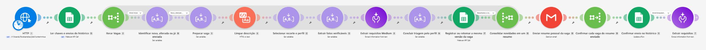
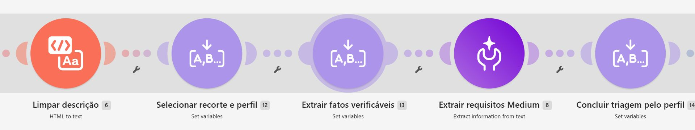
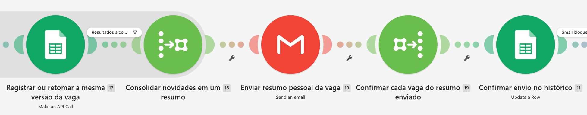

Anúncio completo
Graduação concluída
A extração incluiu uma exigência de outra trilha.
Automação em Make que coleta vagas públicas no Greenhouse, extrai requisitos por trilha e envia um resumo por e-mail.
Quando um anúncio reúne várias trilhas, o fluxo separa a descrição de cada vaga antes da extração. Em um anúncio do iFood, esse recorte corrigiu a interpretação do requisito de formação.
Anúncio completo
A extração incluiu uma exigência de outra trilha.
Trecho da trilha
A extração identificou a elegibilidade prevista na descrição da vaga.



O histórico do monitor evita reenvios. A triagem foi conferida em três anúncios públicos do iFood, e o envio automático do resumo por e-mail foi validado.